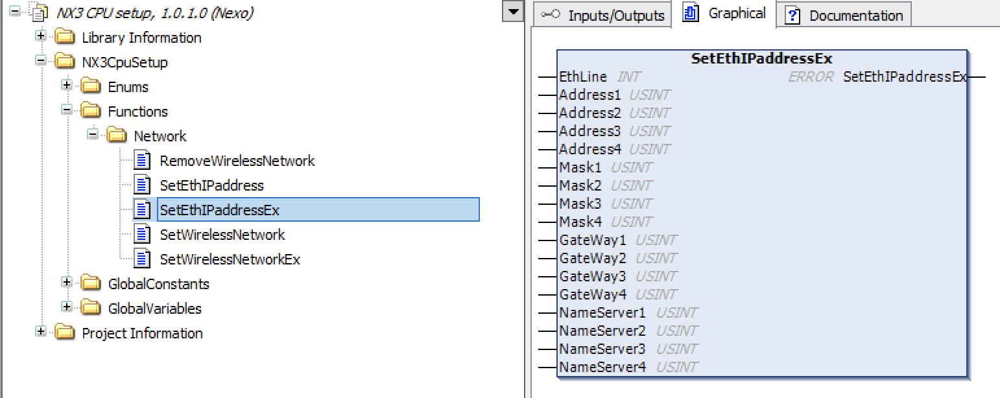

Document title
nX3 è un controllore avanzato per automazione industriale programmabile con CODESYS. È stato pensato per soddisfare una vasta gamma di esigenze applicative, può essere utilizzato come semplice controllore logico o come motion controller avanzato grazie alla completa integrazione delle librerie di SoftMotion, CNC e robotica di CODESYS. È governato da un sistema operativo realtime che consente di impostare il tempo di switching delle task di CODESYS sotto al millisecondo (tipicamente fino a 250microsecondi.) con un jitter normalmente contenuto entro i 20 microsecondi.
:::{figure} img/173236573-nexo_nx3a.jpg
width: 60% figclass: margin-caption alt: nX3 name: nX3a
:::
Questo manuale descrive l'hardware e le funzionalità software specifiche del controllore neXo nX3.
:::{seealso} Per qualsiasi indicazione riguardo la programmazione CODESYS è possibile consultare l'help online di CODESYS. :::
Hardware
Collegamenti
:::{figure} img/image2.png
width: 100% figclass: margin alt: collegamenti name: collegamenti
:::
| Simbolo | Funzione |
|---|---|
| + | power supply +24VDC |
| - | power supply 0VDC |
| PE | power supply ground connection |
| ↓ ↓ | watchdog relè output |
| ETH0 | ethernet for realtime |
| ETH1 | ethernet |
| CAN H | CAN High (in CODESYS CAN1) |
| CAN L | CAN low (in CODESYS CAN1) |
| 1 | CAN High (in CODESYS CAN0) |
| 2 | CAN Low (in CODESYS CAN0) |
| ° | jumper for CAN termination resistor |
Led frontale
Il led frontale multicolore è posizionato a destra della microSD card e assume un colore diverso a seconda degli stati del controllore. Nella tabella di seguito i possibili stati del controllore e relativa segnalazione.
:::{figure} img/image3.png
width: 100% figclass: margin alt: led name: led
:::
| Significato | Colore Led |
|---|---|
| OS in fase di boot | bianco |
| applicazione CODESYS in run | verde |
| tensione sotto i 19 volt | spento |
| applicazione CODESYS in stop o assente | arancio |
| applicazione CODESYS in exception | rosso |
Memoria ritentiva
nX3 effettua la memorizzazione automatica delle variabili dichiarate come ritentive all'interno dell'applicativo CODESYS, la memoria ritentiva massima utilizzabile è di 128kbyte.
Qui un esempio di dichiarazione di variabile ritentiva in un POU
VAR RETAIN
iRem1 : INT;
END_VAR
Qui un esempio di dichiarazione di variabile ritentiva globale in GVL
VAR_GLOBAL RETAIN
gvarRem1 : INT;
END_VAR
Quando allo spegnimento la tensione di alimentazione scende sotto i 19VDC entra in funzione il micro UPS integrato di nX3 e le variabili ritentive vengono salvate automaticamente. In questa fase il led frontale viene spento per risparmiare corrente e garantire un tempo utile per il salvataggio.
Software
Parametri nX3
Un volta creato un progetto per nX3 è possibile, editando il nodo device e selezionando la sheet nX3 CPU Parameters, visualizzare e modificare alcuni parametri che consentono di impostare alcuni funzionamenti del controllore.
BusSpeed
Consente di impostare la velocità del bus di comunicazione con i moduli di I/O locali. E' impostato per default al valore massimo di 8Mhz. Non dovrebbe mai essere modificato.
Watchdog
Il modulo nX3 dispone di un Watchdog connesso ad un rele statico le cui connessioni sono disponibili sul connettore di alimentazione e che permette di verificare costantemente il corretto funzionamento di hardware e software.
Editando il nodo device e selezionando la sheet nX3 CPU I/O Mapping è possibile verificare che è mappata automaticamente una variabile ti tipo BOOL con nome Watchdog. Se lo si desidera in questa sheet è possibile cambiare nome alla variabile.
Per attivare il watchdog è sufficiente aggiungere la seguente linea di codice nel task che si ritiene rilevante per l'esecuzione della propria automazione.
WATCHDOG := TRUE;
Se in seguito ad un guasto o un errore nel software dell'applicazione la linea contenente il codice non è più eseguita il relè di watchdog si apre.
Linee Ethernet
Il modulo dispone di due linee Ethernet: eth0 e eth1.
La linea eth0 è impostata per default con questi valori:
IP=192.168.1.100, mask=255.255.255.0, gateway=192.168.1.1, nameserver=192.168.1.1
La linea eth1 è impostata per default con questi valori:
IP=192.168.2.100, mask=255.255.255.0, gateway=192.168.2.1, nameserver=192.168.2.1
Le linee ethernet sono entrambe utilizzabili sia con l'ambiente di sviluppo CODESYS per la programmazione e il debug delle applicazioni sia come etherCAT master. La linea eth0 è quella con minor latenza e consente un jitter leggermente inferiore rispetto alla eth1, ne è pertanto consigliato l'utilizzo per la connessione etherCAT ini particolare quando si sviluppano applicazioni di Motion Control, CNC e robotica.
La libreria nX3CpuSetup 1.0.1.0 contiene alcune funzioni che permettono di configurare entrambe le linee Ethernet.

Funzione SetEthIPAddressEx
La funzione SetEthIPAddressEx permette di impostare l'indirizzo IP, la Subnet Mask, l’indirizzo di Gateway e il Nameserver per entrambe le linee Ethernet.

Di seguito un esempio di codice che consente di impostare l’interfaccia eth0.
VAR
Error: nX3.ERROR;
END_VAR
Error := nX3.SetEthIPaddressEx( 0, 192, 168, 10, 123, 255, 255, 255, 255, 192, 168, 10, 1, 192, 168, 10, 1);
Di seguito un esempio di codice che consente di impostare l’interfaccia eth1.
VAR
Error: nX3.ERROR;
END_VAR
Error := nX3.SetEthIPaddressEx( 1, 192, 168, 20, 123, 255, 255, 255, 255, 192, 168, 20, 1, 192, 168, 20, 1);
Qualora si desideri impostare le linea con indirizzo assegnato tramite DHCP è possibile utilizzare questo esempio di codice.
VAR
Error: nX3.ERROR;
END_VAR
Error := nX3.SetEthIPaddressEx( 0, 0, 0, 0, 0, 0, 0, 0, 0, 0, 0, 0, 0, 0, 0, 0, 0);
Attenzione La funzione impiega qualche secondo per effettuare la configurazione, è opportuno chiamarla da un task con priorità più bassa di quello utilizzato per l'automazione in modo da non bloccare l'esecuzione del programma principale.
Moduli I/O
Il controllore nX3 dispone di un bus locale che ne consente l'espansione con i moduli di I/O ProCard realizzati da UFG. Questi possono essere inseriti nel progetto selezionando il device nX3, attivando il menu di contesto (tasto destro del mouse). Appare la finestra di inserimento dispositivi dove sotto la voce Miscellaneous sono elencati i moduli supportati.
Ciascun modulo, una volta inserito nel progetto, dispone di un proprio editor dove la sheet nX3CPU I/O mapping permette di assegnare il nome al punto I/O gestito dal modulo stesso secondo lo standard CODESYS.
Dispositivi di memoria rimovibili.
nX3 permette di inserire sul frontale una scheda micro SD e una memoria USB.
Tramite le funzioni standard di CODESYS per l'accesso ai file è possibile leggere e scrivere file contenuti in questi dispositivi.
Per accedere al directory principale della scheda micro SD è necessario utilizzare il percorso /media/mmcblk1p1/.
Per accedere al directory principale della memoria USB è necessario utilizzare il percorso /media/sda1/.
Codesys USB Dongle Key
E' possibile acquistare licenze per funzionalità aggiuntive come fieldbus, librerie, etc… direttamente dallo store on-line di Codesys.
Per poter attivare la licenza è necessario l’acquisto della CODESYS Key da inserire nella porta USB host di nX3.